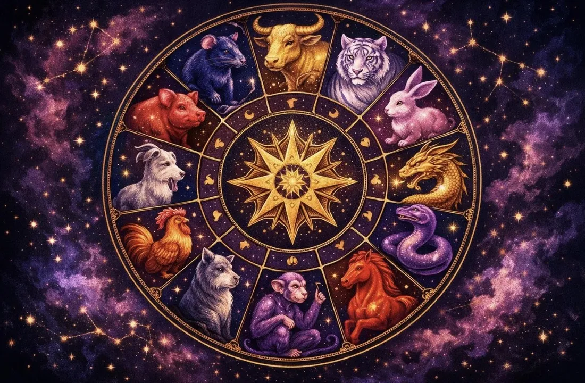

Zodiac Stories & Legends
Why Are There 12 Animals in the Chinese Zodiac?
Twelve animals, twelve years, twelve two-hour periods in a day. The number twelve runs right through the Chinese calendar, and the reason is older than any of the legends.

The short answer
The twelve animals match the twelve Earthly Branches, an ancient Chinese counting system. The branches were used to count years, months, days and the twelve two-hour periods of the day. Over time each branch was paired with an animal, and the animals became the friendlier, easier-to-remember face of the system.
The Earthly Branches
The branches are very old: they are at least as old as the ten Heavenly Stems, which were already used to count days in the Shang dynasty (about 1600 to 1050 BCE). Each branch has its own two-hour period, starting with zi, the Rat's branch, from 23:00 to 01:00, and ending with hai, the Pig's, from 21:00 to 23:00.
When the twelve branches are combined with the ten stems, they form a cycle of sixty, used for naming years. That is why each zodiac animal also comes with an element, such as Fire Horse or Water Rabbit, and why the same animal-and-element pair returns only every sixty years.
The Year Star
Why twelve in the first place? One widely discussed theory points to the sky. Jupiter takes roughly twelve years to travel around the sun, and Chinese astronomers called it the Year Star (Suixing) and used its slow movement to mark years. The twelve branches may have been adapted from those observations. Another scholarly suggestion links them to phases of the moon. Neither theory is proven, but both show how naturally the number twelve fits a calendar: there are also about twelve lunar months in a year.
The oldest records
Archaeology shows the animals were around long before they settled into today's list. Bamboo slips from a Qin tomb at Shuihudi in Hubei, sealed in 217 BCE and recovered in 1975, already record a cycle of animals, but a few differ: a deer stands where the Horse is now, and a horse where the Goat is. The first surviving text to name exactly the twelve animals we use today is the Lunheng, written by the Han-dynasty scholar Wang Chong in the first century CE.
The legends behind the number
Folk tales give a simpler answer: twelve animals came. In the most famous story, the Jade Emperor held a race across a river, and the first twelve animals to arrive earned a year each; see The Great Zodiac Race. In a Buddhist version, the Buddha invited all the animals to visit him, and only twelve came. These stories are much loved, but they explain the order of the animals rather than the true origin of the system.
Twelve animals across Asia
The same twelve-animal cycle is used in many places. In Cambodia the animals have Khmer names, from Choot (Rat) to Kor (Pig), and the animal year changes at Khmer New Year in April rather than at Lunar New Year, as explained in Khmer animal years and Khmer New Year and the animal year. Because Lunar New Year falls in January or February, people born early in the year should check their animal with a birth-date tool rather than the year alone.
Find your own animal and element in seconds with the Chinese Zodiac Checker, or browse all twelve animals.
Frequently asked questions
Why does the Chinese zodiac have 12 animals?
The animals are paired with the twelve Earthly Branches, an ancient counting system for years, months and hours.
Is the zodiac linked to Jupiter?
One theory says the twelve branches came from observing Jupiter, the Year Star, which takes about twelve years to circle the sun. It is a theory, not a proven fact.
What is the oldest record of the zodiac animals?
Bamboo slips from Shuihudi (217 BCE) record an early animal cycle; Wang Chong's Lunheng (first century CE) is the earliest text with today's twelve animals.
Why do the animals come with elements?
The twelve branches combine with ten Heavenly Stems to make a sixty-year cycle, which gives each animal year an element.
Sources and further reading
- Wikipedia: Earthly Branches — the twelve branches, their two-hour periods and the theory linking them to Jupiter, the Year Star.
- Wikipedia: Chinese zodiac — the Great Race folk tale and its variants, and the link between the animals and the Earthly Branches.
- Wikipedia: Rishu (daybooks) — the Shuihudi daybook, recovered in 1975 from a tomb dated 217 BCE.
- StudyCLI: Chinese Zodiac Explained — notes that the Shuihudi slips (tomb sealed in 217 BCE) record an animal cycle with a deer where the Horse is now.
- Macao Communications Museum: Chinese Zodiac in Postage Stamps — names Wang Chong's Lunheng as the earliest surviving text with today's twelve signs.
- Britannica: Chinese zodiac — the zodiac as a classification of years in a repeating twelve-year cycle.
The Great Race and the other tales here are folk tales, told in many versions; they are not historical events. Personality traits are traditional zodiac beliefs, shared for culture and entertainment.
Explore more: The Great Zodiac Race · How to calculate your zodiac sign · Khmer animal years · Why the Rat Came First · All Zodiac Stories & Legends
← Back to Zodiac Stories & Legends